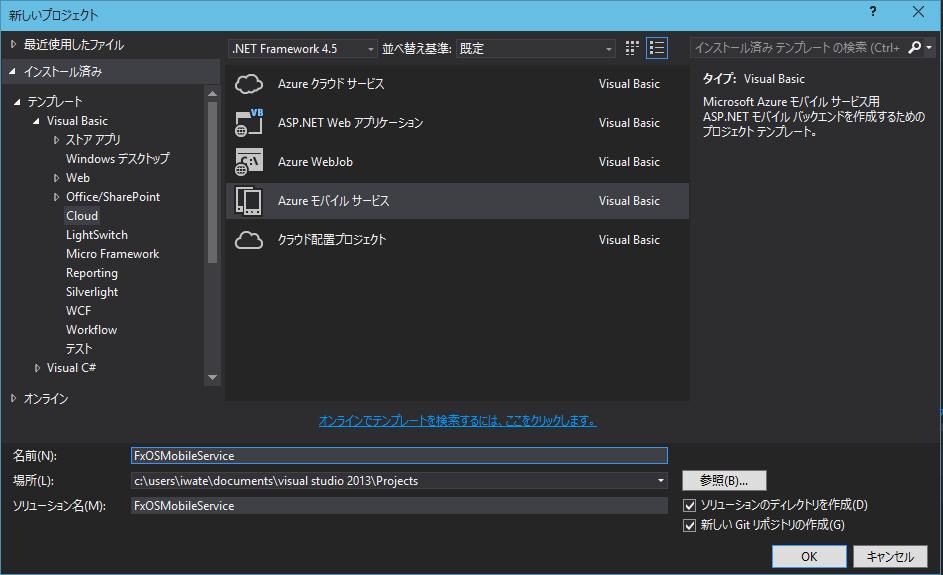
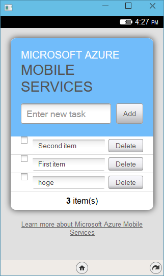

Microsoft Azure Mobile Services (MAMS) is a Mobile Backend as a Service (MBaaS). You can easily develop mobile applications on Firefox OS by using the following features.
Speaking a conclusion, it is impossible on mobile service's specification. Because origin property of Firefox OS App are like app://xxx.contoso.com. However We success connoect and store data by using c# backend.
| Node.js Backend | C# Backend | |
|---|---|---|
| connect | X | O |
| Store data | X | O |
| Single sign-on | X | X |
| Push Notifications | X | X |
Create mobile service project in Visual Studio.
Install helper library.
PM> Install-Package FxOSHelper
Edit App_Start\WebApiConfig.cs. The paramater is origin property of Firefox OS App.
public static void Register()
{
ConfigOptions options = new ConfigOptions();
HttpConfiguration config = ServiceConfig.Initialize(new ConfigBuilder(options));
//次の2行を追加
config.SetCorsPolicyProviderFactory(new FxOSCorsPolicyFactory("app://fxos.contoso.com"));
config.EnableCors();
Database.SetInitializer(new MobileServiceInitializer());
}
Let's deploy the project to Azure!
this is Firefox OS Apps sample code.
